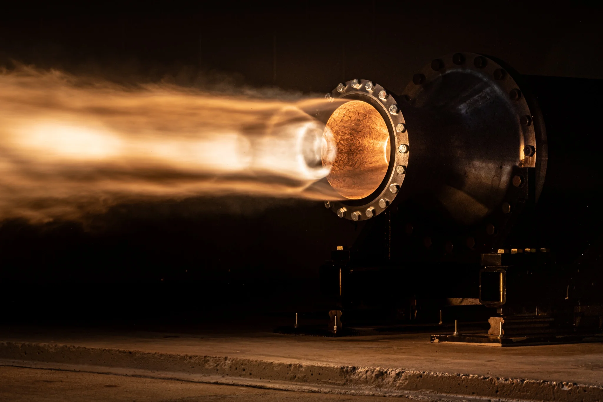
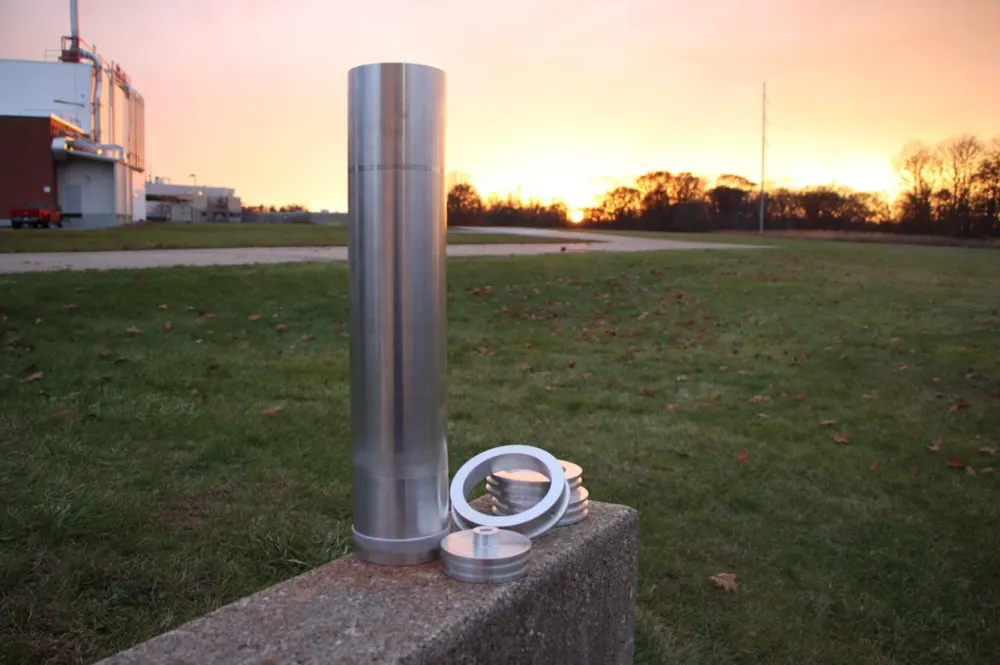
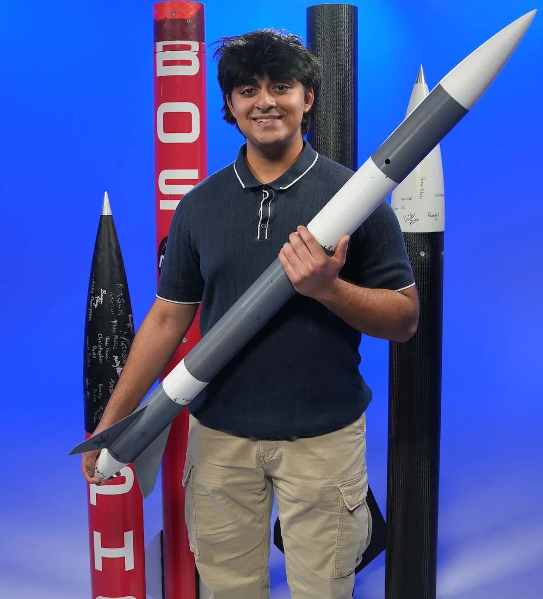

ARES motor bay
Motor bay CAD, component interfaces, mass budget, and structural analysis.

ENGINEERING PORTFOLIO
Aerospace Engineering
Iowa State University
Propulsion · RF systems · Mechanical design
View projectsStudent teams and aircraft design projects.
Motor bay CAD, component interfaces, mass budget, and structural analysis.

Oxidizer-tank fixture, vent-extension redesign, and test-stand modifications.

MATLAB antenna studies, QFH mockup, dipole build, and ground-station adapter.
Materials evaluation
& proposal development
Materials evaluation, proposal development, and solicitation review.

Mission requirements, configuration selection, and preliminary aircraft sizing.

Airfoil selection, XFLR5 analysis, and preliminary performance estimates.
Designed, built, and tested a sub-1.1 kg vehicle. Managed a $1,500 budget and led the Preliminary Design Review. The vehicle completed its qualification flight.
Built an Arduino Uno system in C++ using soil-moisture, temperature, and humidity sensors, an OLED display, and threshold-based alerts.

I’m an aerospace engineering student at Iowa State University, with minors in Astronomy and Physics. I’m interested in propulsion, RF systems, and spacecraft engineering.
I work with ARES on motor-bay design and vehicle integration, Cyclone Rocketry on propulsion hardware, and SRG on RF modeling and antenna prototypes. Through NASA L’SPACE NPWEE, I’ve also worked on materials evaluation and technical proposal development.